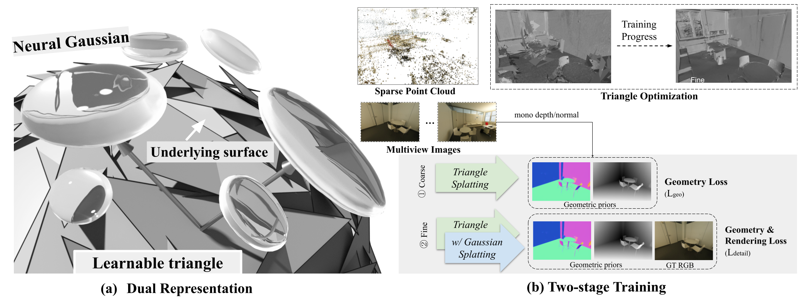

Overview of HaloGS. Our proposed dual-representation is illustrated in (a), where learnable triangles explicitly fit the scene geometry, and neural Gaussians decoded from these triangles render the appearance. In (b), we depict our coarse-to-fine training strategy: during the coarse stage, monocular geometric priors supervise the positions and shapes of the triangles. Subsequently, in the fine stage, neural Gaussians decoded from these half-trained triangles are optimized using ground truth images. Concurrently, depth and normal maps rendered from the neural Gaussians provide additional refinement feedback to further enhance the triangle representation.